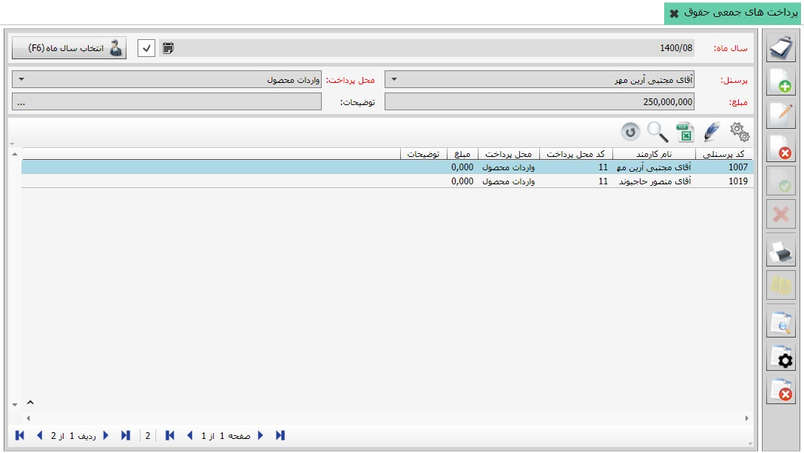

به کمک این ابزار، امکان پرداخت گروهی حقوق برای کارکنان سازمان یا شرکت فراهم گردیده است. شما می توانید، منوی «پرداخت های جمعی حقوق» را کلیک نمایید. همانطور که در تصویر مشاهده می کنید، : برای ایجاد پرداخت ابتدا دکمه« تایید و مشاهده F6» را کلیک نمایید. پس از انتخاب ماه، می توانید، به کمک دکمه «F8» فرد مورد نظر را به لیست اضافه نمایید. علاوه بر آن امکان نمایش،ثبت و حذف سند مالی، مطابق با پرداخت موردنظر پیاده سازی شده است.
همچنین امکان ثبت پرداخت از طریق «فیش حقوقی» کارکنان نیز از طریق آیکن «ثبت پرداخت از فیش حقوقی» نیز پیاده سازی شده است.